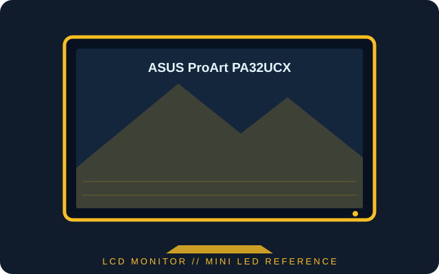

[ INDIVIDUAL COMPONENT // DISPLAYS ]
ASUS ProArt PA32UCX
32-inch 4K professional IPS monitor with a Mini LED backlight, Dolby Vision/HDR10 support and Thunderbolt 3 connectivity.

IDENTIFICATION: Confirm the complete model and regional suffix on the rear label. PA32UCX and PA32UCX-K bundles can differ; published figures describe the documented family and the matching manual takes precedence.
Specifications
| Catalog subcategory | LCD displays |
|---|---|
| Exact product / family | ASUS ProArt PA32UCX |
| Panel and native resolution | 32-inch IPS LCD with Mini LED backlight, 3840 × 2160 (16:9) |
| Native timing | Up to 60 Hz at native resolution |
| Luminance / contrast | 600 cd/m² typical; 1200 cd/m² HDR peak; 20,000:1 typical contrast (1,000,000:1 maximum HDR contrast as specified by ASUS) |
| Inputs / companion ports | DisplayPort 1.2, HDMI 2.0b × 3, Thunderbolt 3 input and output (input supports up to 60 W power delivery), USB 3.0 hub and headphone output |
| Stand / VESA mounting | Height, tilt, swivel and pivot adjustments; 100 × 100 mm VESA mount |
Power and compatibility notes
Typical power consumption is approximately 58 W; maximum draw depends on brightness and attached devices. Thunderbolt 3 video/charging requires a compatible host and certified cable; the input supplies up to 60 W, which may not charge a workstation at full load. DisplayPort and HDMI are alternatives, but HDR format, chroma and timing depend on the graphics source and cable.
Preservation notes
Record the rear-label suffix, serial/date code, supplied stand and Thunderbolt accessories, host timing, HDR mode, calibration state and uniformity condition. Keep any factory calibration report and matching regional manual with the unit; use qualified service procedures for the high-density backlight and power electronics.
Manufacturer documentation and sources
- ASUS — PA32UCX technical specificationsManufacturer specifications for panel, resolution, luminance, contrast and refresh.
- ASUS — PA32UCX support and manualsOfficial model-family documentation and user guides.